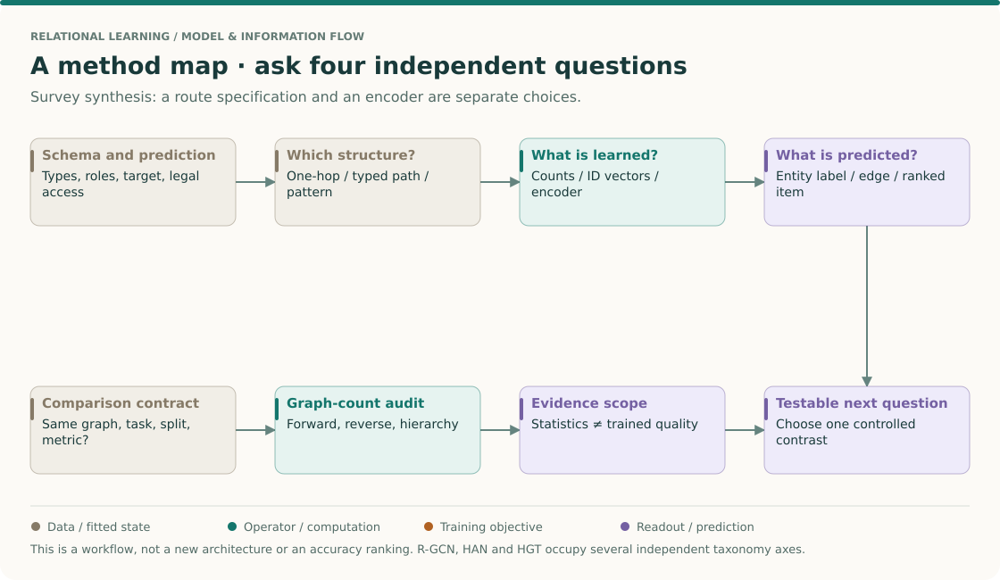
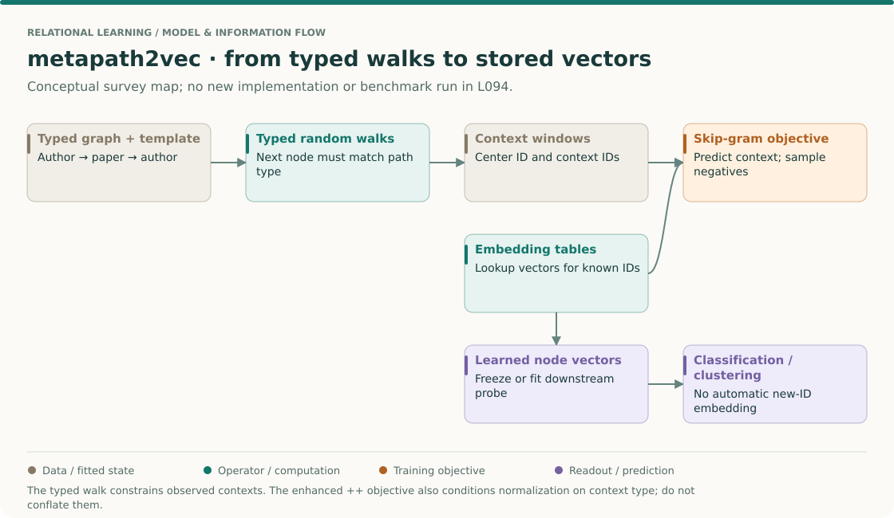
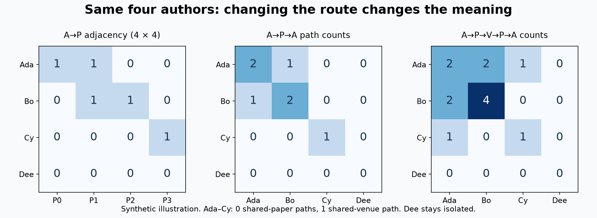
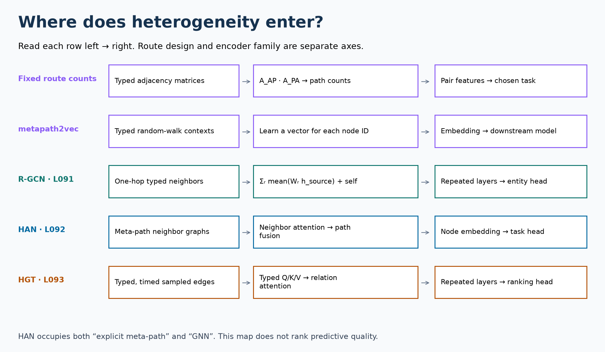

Year 3 · Quarter 2 · Lesson 094
HIN survey: map the mechanism, audit the evidence
Read the executed lab · Run in Colab · Download student notebook · Teacher solution
Go to exercises · Reference map · Reproduction contract and commands
See the idea · then trace the details
metapath2vec: types constrain a random walk
The walk defines the context pairs used to learn embeddings.
1Select a schema path
A repeating sequence of permitted node types
The schema guides the random walk through heterogeneous relations rather than accepting any adjacent type.
2Walk to create contexts
Walk sequence → center/context windows
Nearby positions in sampled walks become training contexts. This is a sampling construction, not a supervised task label.
3Fit node embeddings
Typed skip-gram objective → embedding table
Learn embeddings from those co-occurrences. Downstream evaluation requires a separate task and split contract.
Pause and predict: If two graphs share their node types but differ in edges, do they generate the same walks?
Not generally. The schema restricts type transitions, but actual edges determine which transitions are available.
Answer: Not generally. The schema restricts type transitions, but actual edges determine which transitions are available.
One tangible win¶
Build a defensible map of heterogeneous graph methods. Given a method description, identify what structure it uses, how routes are chosen, what it learns, and what evidence could test it. This is the organizing lesson between the three heterogeneous encoders and the coming database/recommendation lessons.
Our mission is to establish when relational structure adds predictive value. A taxonomy helps choose a testable hypothesis. It does not establish that more elaborate structure is better.
Reading route: first complete the cold questions; then trace the small graph; finally fill the taxonomy and audit a real released graph in the notebook. You can complete the conceptual core in one sitting and return for the data audit.
Retrieve before reading¶
Write three short answers from memory before opening the model answers:
- In L091, what chooses a message's weight matrix?
- In L092, what does the designer choose before attention is learned?
- In L093, why does adding relative time not guarantee leakage-free prediction?
Check after attempting
R-GCN uses the relation type. HAN starts with selected meta-path neighbor graphs. HGT's time representation changes the computation; availability cutoffs and removal of target edges still have to be enforced by the data pipeline.
The big picture · classify assumptions before comparing results¶
THE BIG PICTURE · 094 / A MAP OF DESIGN CHOICES
Bring forward: R-GCN, HAN and HGT made different choices about transformations and routes. Follow: schema → supplied structure → learned representation → prediction task → evidence contract. Carry forward: the bipartite and database lessons make the input assumptions concrete before the later controlled comparison.
L091: relations · L092: paths · L093: attention · L060: comparison protocol · Sequence map
Follow the arrows by block number. Branches are separate paths; numbers identify blocks, not a mandatory execution order.
1 Data / fitted stateSchema and prediction
Types, roles, target, legal access
2 Data / fitted stateWhich structure?
One-hop / typed path / pattern
3 ComputationWhat is learned?
Counts / ID vectors / encoder
4 OutputWhat is predicted?
Entity label / edge / ranked item
5 Data / fitted stateComparison contract
Same graph, task, split, metric?
6 ComputationGraph-count audit
Forward, reverse, hierarchy
7 OutputEvidence scope
Statistics ≠ trained quality
8 OutputTestable next question
Choose one controlled contrast
Endpoint of this pictured path.
Survey synthesis: a route specification and an encoder are separate choices. This is a workflow, not a new architecture or an accuracy ranking. R-GCN, HAN and HGT occupy several independent taxonomy axes.


Use the survey to generate a hypothesis¶
The primary survey is Dong, Hu, Wang, Sun and Tang (2020), identified precisely in the reading contract below. Read its schema vocabulary before its representation families. A family label should help you predict a behavior: what inputs are required, which distinctions survive, and what happens to an unseen entity. It cannot rank models on its own.
Try the same question for three methods: “What must I provide to represent a new paper?” A node-ID lookup needs a new vector or an explicit inference procedure. An attributed encoder needs suitable features and the required neighbors. A featureless R-GCN that uses identity coordinates still needs a policy for new identities. Calling all three “graph embeddings” conceals this operational difference.
Locate the lookup model in the same map¶
Follow the arrows by block number. Branches are separate paths; numbers identify blocks, not a mandatory execution order.
1 Data / fitted stateTyped graph + template
Author → paper → author
2 ComputationTyped random walks
Next node must match path type
3 Data / fitted stateContext windows
Center ID and context IDs
4 ComputationEmbedding tables
Lookup vectors for known IDs
5 Training objectiveSkip-gram objective
Predict context; sample negatives
Endpoint of this pictured path.
6 OutputLearned node vectors
Freeze or fit downstream probe
7 OutputClassification / clustering
No automatic new-ID embedding
Endpoint of this pictured path.
Conceptual survey map; no new implementation or benchmark run in L094. The typed walk constrains observed contexts. The enhanced ++ objective also conditions normalization on context type; do not conflate them.


The survey mentions metapath2vec, so its architecture deserves a visible handoff too. A designer provides a typed walk template. The walker produces node sequences whose steps respect that template. Context windows turn those sequences into center/context pairs. A skip-gram objective learns lookup vectors that make sampled contexts predictable. The resulting vectors feed a later classifier or clustering procedure. The authors' project separates walk generation, learning code, saved representations and downstream labels; follow that order when reading it.
This contrasts with HAN even though both use meta-paths. HAN constructs endpoint neighborhoods and computes representations from features with attention. metapath2vec optimizes stored vectors from walk contexts. The enhanced metapath2vec++ objective additionally distinguishes context types; do not transfer a ++ detail silently to the base method. This is a conceptual source map, not an added implementation or fresh reproduction lane.
A concrete classification exercise¶
Consider a hypothetical method: choose PAP and PSP, calculate binary endpoint graphs, compute one mean keyword vector per route, concatenate the results, and fit logistic regression. Its route policy is hand-specified; its neighborhood aggregation is fixed; its classifier is learned; its inputs include attributes. Changing only the classifier to a neural head does not make route selection learned. Changing the endpoint graphs into walk counts changes the representation even if the classifier stays identical.
Now replace the mean with a learned GAT operation and add semantic fusion. You can explain why the result resembles HAN by identifying changed operations, rather than by spotting the word “attention.” That vocabulary will let you specify an ablation in L099 precisely.
Count what the graph actually stores¶
Suppose a release stores 100 forward facts, their 100 reverse entries, and 12 hierarchy entries outside the listed fact families. “100 edges,” “200 directed entries,” and “212 stored entries” can all describe different legitimate counting conventions. None establishes that two releases contain the same facts. Match the convention, then inspect identities and provenance. The complete NN audit below applies this reasoning to actual released data without repairing a mismatch merely to reach a printed total.
Try first: are “meta-path method” and “GNN” mutually exclusive categories?
No. One names supplied route structure and the other names a representation mechanism. HAN belongs to both descriptions. Use independent axes for route selection, learned object, attributes, supervision and prediction target.
Forward connection. L095 preserves user–item identities that a same-type projection can discard. L096 preserves database roles and event multiplicity. Those are representation decisions made before fitting any encoder. Write one hypothesis linking a retained distinction to a target, plus one intervention that could falsify it. That is the useful output of the survey; a list of impressive model names is not enough.
1 · Repair the reading contract¶
The roadmap called this “Sun & Han 2020,” without an identifiable title. This package uses Dong, Hu, Wang, Sun and Tang (2020), Heterogeneous Network Representation Learning. Read §1 for schema vocabulary, §3.1–3.2 for the two representation families, and §4 for open questions and OAG statistics. Sun and Han's 2012 work is historical context, not the author list of this 2020 paper. Primary survey.
Scope check. This survey does not introduce a new predictive architecture or a table of its own model accuracy. Its concrete numeric target here is Table 1's complete NN statistics row. We audit the entire released NN graph and the arithmetic of all three printed rows. Retraining the preceding models belongs to their named experiment tracks, linked below. A statistics audit is not model-result reproduction.
2 · Start with the schema, then choose a question¶
In plain terms. The schema tells you which kinds of things can connect. A route tells you what relationship you want a sequence of connections to express.
A heterogeneous information network (HIN) is a graph whose nodes or relations have multiple types. A node is one entity instance, such as Ada or paper P0. A node type is a category, such as author or paper. An edge relation gives the connection a meaning, such as “writes.” The schema is the graph of these types and permitted relations. A meta-relation is a source type, relation, target type triple: (author, writes, paper).
The meta-path author → paper → author is a schema-level sequence. Ada → P1 → Bo is one concrete path instance. The reversed “written by” link must actually be available in the representation; a directed graph does not imply it automatically. These distinctions follow the survey's §1 definitions. Survey §1.
Worked example. Four authors write four papers. Ada writes P0 and P1; Bo writes P1 and P2; Cy writes P3; Dee has no papers. P0 and P3 appear at venue V0, while P1 and P2 appear at V1.


Step 1: store a relation. Let A_AP be a 4 × 4 matrix: its author row and paper column contain 1 when that authorship exists, otherwise 0. Its transpose A_PA reverses that relation.
Step 2: compose relations. Matrix multiplication A_AP @ A_PA sums over intermediate papers. Entry (Ada, Bo) is 1 because they share P1. Entry (Ada, Ada) is 2 because Ada has two papers. The diagonal is not automatically an error or a self-loop added by a neural layer; it counts actual returning walks.
Step 3: change the meaning. Let A_PV have four paper rows and two venue columns. The product A_AP @ A_PV @ A_PV.T @ A_AP.T counts shared-venue walks. Ada–Cy changes from 0 to 1. They have no common paper, but both have a paper at V0. Ada–Bo changes from 1 to 2 because two paper-pair combinations pass through V1.
Step 4: distinguish counts from reachability. Replacing every positive entry by 1 asks whether a route exists. Keeping the integer asks how many instances exist. Those are different input features. A sparse implementation must preserve the chosen meaning; building these dense products on OAG would be impractical.
A meta-graph is not simply a longer path¶
A meta-graph is a typed structural pattern that can branch and combine constraints. Here is one explicit teaching example: require both a shared-paper route and a shared-venue route between the same two authors. Define its Boolean result as (paper_count > 0) AND (venue_count > 0). Ada–Cy fails this conjunction despite their shared venue. This example is a chosen pattern semantics; it is not a universal formula for every meta-graph method.
Predict, intervene, explain. Remove Bo's link to P1. Ada–Bo shared-paper count becomes 0; the shared-venue count becomes 1 because Bo still has P2 at V1. Dee's row remains zero. Explain why changing the route can create connectivity without adding an authorship edge.
3 · Use independent classification axes¶


A useful taxonomy should survive a method that belongs to two categories. “Meta-path” describes route construction; “GNN” describes a learned representation mechanism. They are not competing labels.
| Method | Structure or route supplied | Learned object | Prediction handoff |
|---|---|---|---|
| Fixed route counts | Explicit typed path | Nothing in the counting operator | Counts become task features |
| metapath2vec | Typed walk template and sampled contexts | One embedding vector per node ID | Embeddings feed a downstream task |
| R-GCN · L091 | One-hop relation-labeled edges | Relation transforms, optionally shared bases | Repeated updates feed a task head |
| HAN · L092 | Chosen meta-path neighbor graphs | Neighbor attention and semantic fusion | Fused node representations feed a task head |
| HGT · L093 | Typed edges and relative time contexts | Node-type projections and relation attention/message transforms | Repeated updates feed a task head |
Read the map’s symbols. In R-GCN, h_source is a source-node vector and Wᵣ is the learned linear map for relation r; the sum combines relation-specific neighbor means. In HGT, a query (Q) represents what the receiver attends to, a key (K) represents how a source matches that query, and a value (V) is the payload to aggregate. A task head converts the resulting representation into predictions.
Supervision is another axis. A supervised objective uses task labels; an unsupervised objective uses another signal, such as node co-occurrences. Route choice alone determines neither. Likewise, node attributes are information supplied to an encoder, while learned node-ID vectors are parameters; they are not interchangeable assumptions.
Lookup versus encoder. A lookup table stores a learned vector for each known node ID. A message-passing encoder computes a representation from inputs and neighbors using shared parameters. For a newly arriving node, a lookup table needs an extra rule or optimization. An encoder can compute a new representation when the required features, types, and neighbors are available. metapath2vec, author project; R-GCN paper.
Do not collapse route design into attention. In HAN, the designer supplies the possible routes. Learning semantic weights chooses how to combine representations from those routes. It does not make an omitted route appear. In HGT, multiple layers compose one-hop typed updates, but that is not an exhaustive search over every possible relational query. HAN §4; HGT §3.
Induction needs an input contract. A GNN is not automatically an inductive experiment. If its only input is a learned embedding tied to training IDs, new IDs still require a policy. A transductive experiment may expose all graph nodes during fitting while hiding test labels. An inductive experiment withholds the target nodes or graphs from fitting. For forecasting, the time at which each feature and edge becomes available adds another constraint. See L083 GraphSAGE and L093 HGT.
Bridge the three preceding lessons¶
R-GCN addresses the loss of relation meaning caused by a shared transform. HAN addresses the need to distinguish selected multi-hop meanings. HGT addresses typed attention and composition with a scalable sampling strategy. These are different design choices, not three rungs on an accuracy ladder. Revisit their full computation maps: L091, L092, L093.
4 · A taxonomy is not a leaderboard¶
Worked evidence trap. AIFB entity-classification accuracy, ACM embedding KNN F1, and CS paper-field ranking NDCG measure different tasks on different graphs. Sorting their numeric values would produce an ordering with no statistical interpretation. Repeated seeds cannot repair that mismatch. Accuracy is the fraction of correct class predictions. F1 combines precision and recall; KNN here is a k-nearest-neighbor classifier applied to embeddings. NDCG scores the ordering of relevant items with a rank discount and normalizes by an ideal ranking. These quantities have different denominators and prediction units.
An evaluation protocol specifies what the model could see, how it was chosen, and how predictions are scored. Compare data hashes, target task, split identities, feature access, target-edge removal, selection rule, compute/search budget, metric definition, and aggregation. A missing field is unknown, not agreement.
The notebook's compare_protocols returns INCOMPARABLE for a known conflict, NOT_ESTABLISHED when required information is missing, and COMPARABLE only when every required field is recorded and agrees. That last state is eligibility for a controlled comparison. It is not statistical significance, fairness of every implementation detail, or proof of reproduction.
A fair next experiment. Choose one graph, one prediction target, fixed availability rules, a declared split, and a validation-only selection budget. Include a simple baseline that tests whether the task is trivial. Train the candidate encoders with comparable opportunities and report paired outcomes. For a broad family claim, repeat across datasets and aggregate at the dataset level, as in L055 and L060.
5 · Reproduce the accounting before trusting the benchmark¶
Held fixed: the SHA-256-pinned complete NN archive and a source-visible read-only loader. Measured: every node count and every stored typed adjacency. Varied: the edge-count convention. There are no sampled nodes, random seeds, train/validation choices, or fitted models in this audit.
The released structure stores both original and rev_ relations. It also stores field-to-field hierarchy links, which are absent from the table's five listed edge families. The audit counts original entries, verifies their reverse content, and reports both totals. An edge entry represents a source/target pair within one relation map; repeated events overwritten during preprocessing cannot be recovered from it.
| NN statistic | Paper Table 1 | Complete released NN | Status |
|---|---|---|---|
| nodes | 66,211 | 66,211 | MATCH |
| edges | 3,638,702 | 845,916 | MISMATCH |
| paper | 18,911 | 18,911 | MATCH |
| author | 32,307 | 32,307 | MATCH |
| field | 9,540 | 9,540 | MATCH |
| venue | 2,008 | 2,008 | MATCH |
| institute | 3,445 | 3,445 | MATCH |
| PA | 48,551 | 48,551 | MATCH |
| PF | 202,281 | 202,281 | MATCH |
| PV | 189,116 | 18,911 | MISMATCH |
| AI | 48,765 | 48,765 | MATCH |
| PP | 1,355,082 | 67,754 | MISMATCH |
The release has 422,958 forward entries, including 36,696 field-hierarchy entries. Adding the verified reverse entries gives 845,916. Its five listed forward edge families sum to 386,262. These are distinct counting conventions, not alternative model scores.
Explain the discrepancy before fixing anything. Matching all node counts is useful evidence, but it does not establish identical edges or features. An apparent printing error, different preprocessing, or another snapshot could explain some gaps. This audit does not identify which explanation is true. Keep the printed targets unchanged and preserve the mismatch.
| Printed row | Sum of five node types − printed node total | Sum of five edge families − printed edge total |
|---|---|---|
| NN | 0 | -1,794,907 |
| CS | 15,238 | 0 |
| OAG | 0 | 0 |
The CS node sum differs by 15,238. The NN listed edge sum differs by −1,794,907. These checks expose accounting questions; they do not establish which entry or convention is wrong.
Scope check. The arithmetic check uses all three printed rows; it does not load CS or OAG. Fresh graph coverage is NN only. Historical snapshot identity and full-paper reproduction remain NOT_ESTABLISHED; historical comparison is INCOMPARABLE. The counting implementation passes when it accurately reports mismatches. It must not turn a mismatch into a successful reproduction label.
Follow the existing model evidence without silently rerunning it¶
| Existing artifact | Named target / executed coverage | Evidence boundary |
|---|---|---|
| L091 | AIFB Table 2; 10 complete release-port runs | Historical backend/seed identity INCOMPARABLE |
| L092 | ACM Table 3 KNN; one encoder, 40 KNN evaluations | Repeated probes are not independent encoder runs; original MAT identity unestablished |
| L093 | CS Table 2 paper-field L2; zero completed CS fits | NOT_RUN; NN teaching fits cannot substitute for CS |
These are hash-pinned prior author-run artifacts, inspected in this lesson. They are not new training. The complete models and trainers remain visible in their originating notebooks. The reproduction contract gives their named commands and remaining gaps. A source operator check, a nearby score, an audit pass, and a complete historical reproduction are four different claims.
6 · Open questions become testable choices¶
Route selection: would a missing relation path remove necessary information, or merely reduce noise? Compare route interventions while holding prediction examples fixed.
Multiple meanings: are “works with” and “publishes at similar venues” useful for the same target? Do not assume one embedding distance should answer both questions.
Scalability: can the sampler reach the relationships that the target needs within the available budget? An elegant full-graph formula does not settle this.
Availability and transfer: can the same input contract serve a new entity or a new time period? Relative time encoding does not create historical feature snapshots. These operational questions turn the survey's research agenda into experiments relevant to our mission.
7 · Lab: build and defend the map¶
The standalone notebook includes the explanation, portable diagrams, visible audit implementation, frozen evidence, and three live tasks. The default portable exercise uses synthetic matrices (Tier C) and recorded author evidence; an explicit full-graph switch runs the real released NN audit (Tier B). The executed teacher solution runs that full graph locally.
- TODO — compose a typed route. Validate type continuity and compute path counts. CHECK tests multiplicity, an isolated author, and an invalid path.
- TODO — classify on two axes. Represent HAN, HGT, R-GCN, and a lookup model without forcing disjoint categories. CHECK distinguishes route choice from encoder type.
- TODO — reject unsupported comparisons. Make missing protocol fields fail closed. CHECK changes a metric while keeping all other fields fixed.
EXIT artifact: produce one row per method with route, encoder, learned parameters, supervision/feature assumptions, and source evidence. Add a 150–250 word defense: why HAN has two labels; why your proposed comparison is eligible; and what the NN mismatch prevents you from claiming. Do not submit only a passing notebook.
Strict mastery status: PENDING_WRITTEN_DEFENSE. Teacher execution prepares material; it is not evidence that you can retrieve or defend it. Tomorrow, redraw the map from memory before reopening it. Ask the agent follow-up questions and paste your EXIT defense for critique.
What comes next¶
L095 uses a user–item graph to turn the taxonomy into a bipartite prediction problem. L096 maps database keys to typed graph relations. Carry forward the key distinction: choosing a schema, choosing a route, learning an encoder, and validating a prediction are separate decisions.